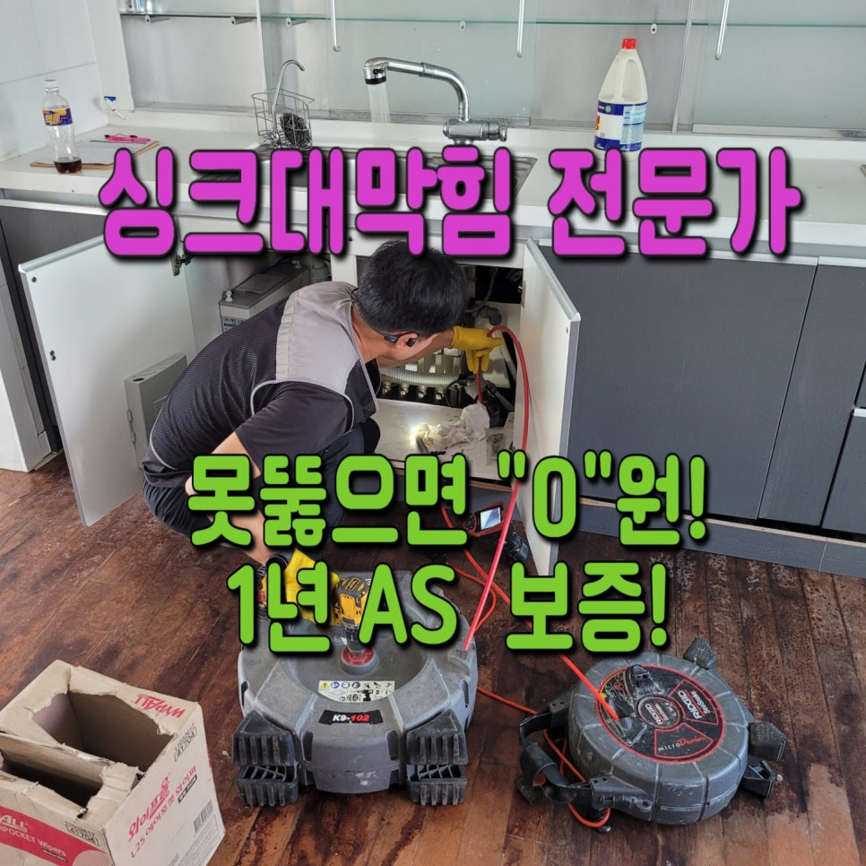
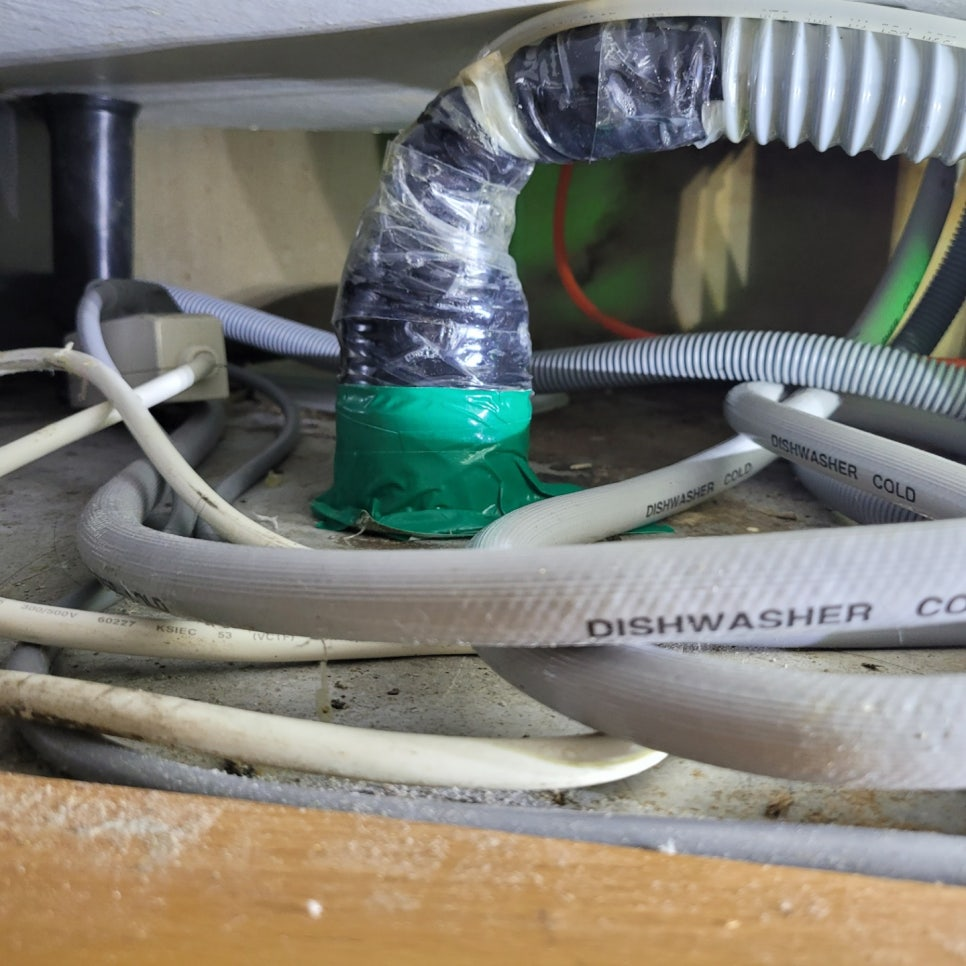
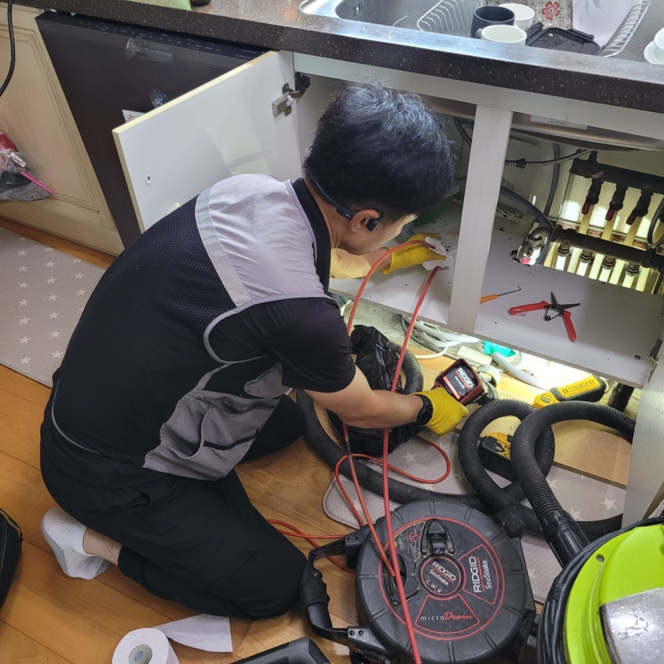
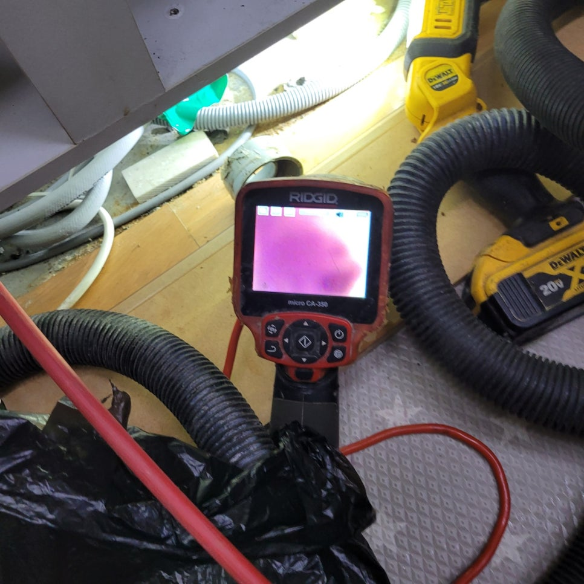
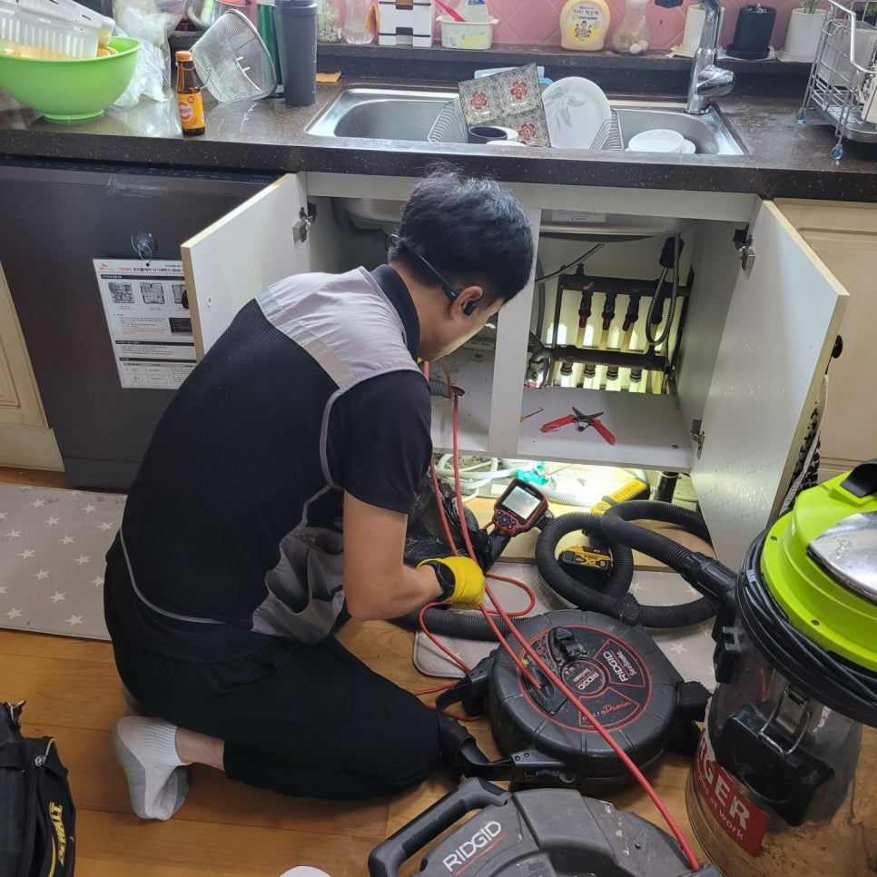
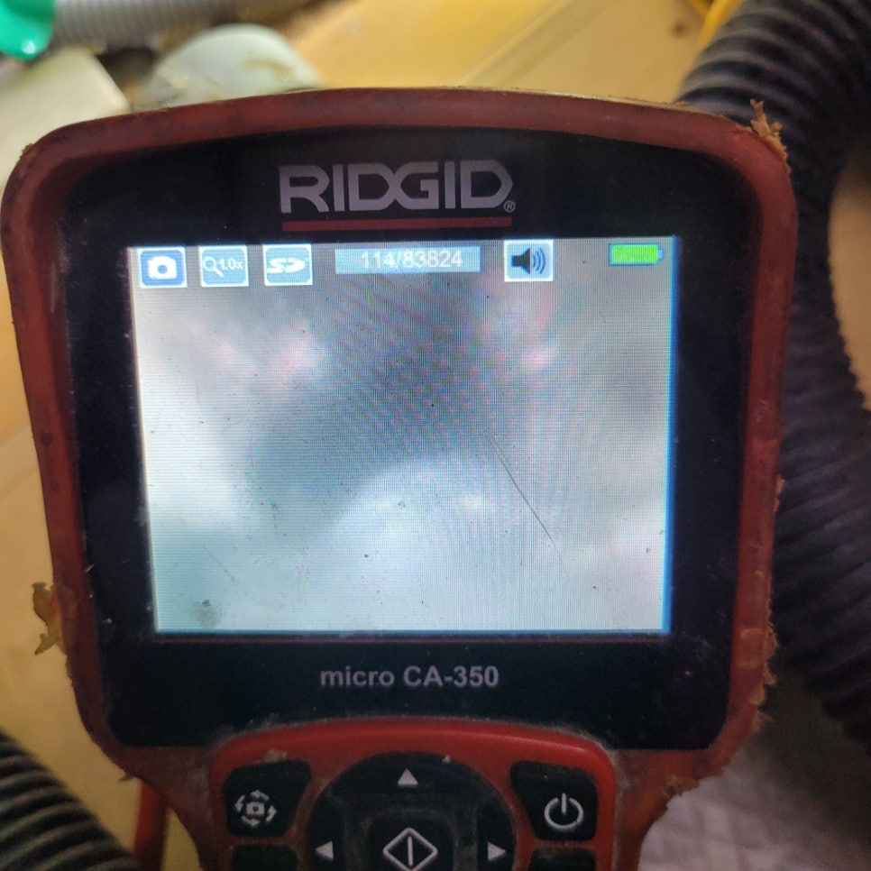
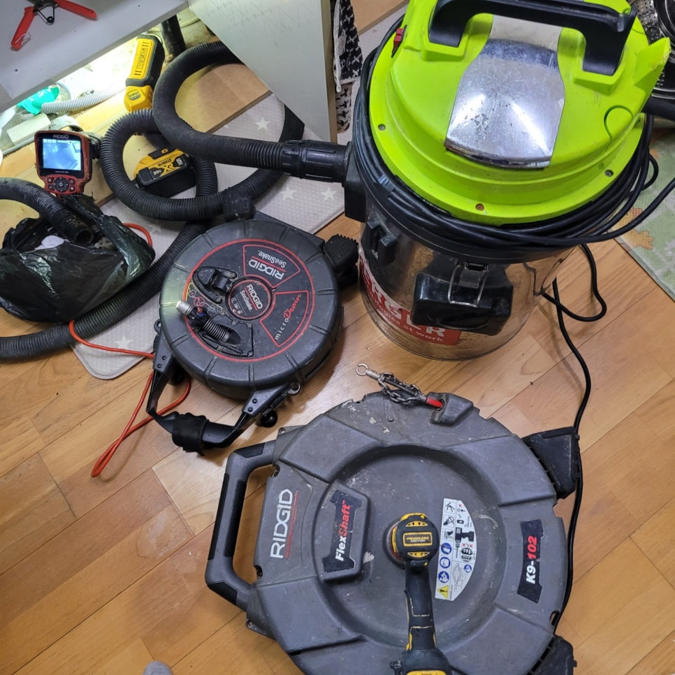

🏠 화성시 병점씽크대막힘뚫음 병점동 진안동 싱크대역류 해결했어요!
화성 병점 싱크대막힘 전문 시공 후기

📋 작업 개요
- 위치: 화성 병점, 병점, 화성
- 서비스 유형: 싱크대막힘, 하수구막힘, 배관막힘, 역류해결, 뚫는업체, 악취차단
- 작업 일시: 2023. 8. 24. 22:10
- 업체명: 하수구수사대 (010-5615-2118)
🔍 문제 상황
화성시 병점씽크대막힘뚫음 병점동 진안동 싱크대역류 해결했어요!
안녕하세요!
오늘은 화성시 병점에 위치한 싱크대막힘을 해결한 현장입니다.
생활을 하면서 결단코 흔하게 일어나는 "의,식,주" 가운데 중요 사항이라 생각되는 "식"에 해당이 되는 집안의 공간을 묻는다면 당연히 주방이라고 말씀드릴 수 있는데요. 부엌은 식재료를 다루는 오붓한 공간으로 지금과 같이 날이 후덥지근한 계절일때는 까딱하면 청결하지 않게 관리를 할 경우 악취와 벌레 꼬임으로 무척 신경쓰이는 경우가 제법 많이 발생한다고 말씀드릴 수 있습니다.
특별히 싱크대막힘이라도 발생한 경우라면 마땅히 물도 쓰지 못해 설거지를 못하는 경우도 생기고,
사실상 평소와 같은 생활이 힘들것이라고 말할 수 있는데요. 지난달에도 하수구막힘을 해결했는데, 아파트에 살면서 심한 막힘 현상을 겪으시며 상당한 스트레스를 받고 계시는 중인 의뢰인을 만날 수 있었습니다.
싱크대막힘은 매 번 미처 피하기도 전에 생겨나는 케이스가 다반사인데요. 그 때 현장 같은 경우에도 얼추 비슷한 처지에 처해 있었습니다.
지금 나 자신한테 일어난 일이 아니라고 해서 지금의 포스팅을 다만 생각할 사안이 결코 아님을 강조하면서, 본격적으로 경험담을 지금부터 알려드리도록 하겠습니다. 빌라, 오피스텔, 상가, 아파트 등을 신경쓰지 않고 싱크대가 있는 곳이라면 무턱대고 이같은 막힘 현상을 체험할 수 있는데요.
그 때 방문 현장 같은 경우에는 막힘으로도 아주 오랜 기간 싱크대에 손을 대

🔎 원인 분석
💡 전문가 진단: 정밀 진단 장비를 사용하여 슬러지의 고착 여부를 판명하고 타격/세척 작업을 실시했습니다.
본 적이 없었던 지라, 어느정도 심각한 상태였을 거라고 미리 예측하여 볼 수가 있었습니다. 싱크대막힘을 해결할 때 가장 기본인 석션 장비는 당연지사이고, 배관 안쪽까지 살펴볼 수 있는 내시경 카메라, 거기에 좋은 분쇄력을 소유하고 있는 플렉스 샤프트 장비까지 대부분 준비해서 갔는데요.
어째서 막힘현상이 일어나고 있는건지 한번도 알지 못하는 상황에서 두 번 이상 들여다보는 일이 안생기도록 미리 필요한 장비는 전부 준비해서 방문한거라 짐작하시면 수긍이 잘 되실것 같습니다. 당시 현장에 도착한 다음 저희들이 먼저 한 일은 바로, 의뢰하신 분과의 대화였는데요.
그동안 생활 습관들과 그 때의 현상들과 관련해 무슨 시도를 했는지를 사전에 체크하였습니다. 하수구뚫는 곳을 콜할때까지 대부분의 현장에서 스스로 뚫는 시도 등은 많이들 해보시는 케이스가 다반사인데요.
화성시 병점씽크대막힘뚫음 병점동 진안동 싱크대역류 해결했어요!
그 때 현장 같은 경우에도 뚫어뻥을 활용하여 어떠한 방법을 동원하든 고쳐보려고 했으나, 결국엔 실패를 하여 연락해주셨더라고요.
물론 셀프로도 깔끔히 처리될때가 아주 많긴 하지만, 배관 막힘 현상은 속도전이라고 얘기할 수 있을 만큼 시간이 지체가 될수록 처리하기 힘들어 가능한한 전문적인 업체를 손길을 빌려 완벽하게 처리하는 걸 추천해드립니다.
그리고 나서 현상 파악을 위해 싱크대에 물을 틀어서 얼마쯤 막혀버린 상태인지를 제대로 보았는데요.
하수구 안쪽으로 물이 도무지 안내려가는, 대단히 안좋은 증상을 작용하였습니다. 만일 막힌 정도가 그 정도로 안심하다면 얼마만큼의 통수는 눈으로 보여줘야 했느데, 시간을 오래 두고나서 살펴봐도 물이 모두 안내려가는 상태라 발빠른 조치가 반드시 필요했지요.
이 사항에 우선 석션 장비를 이용해 흡입하는 식으로 해결되는지 체크해 보았는데요. 그러나 아쉽게도 사실상 흡입으로 배출이 되는 건 거의 없었고, 예상을 했던 것보다 배관 안쪽을 차단하고 있는 슬러지나, 이물질의 양과 세기가 만만치않음을 감지할 수 있었습니다.

🔧 작업 과정
아주 다양한 싱크대뚫는업체에서 석션 장비를 통하여 미리 막힘 처리를 시
도해봤는데요. 저희 또한 기본에 열심이었지만, 생각보다 더 일의 진도가 잘 나가지 않아서 직접 내시경 카메라를 가져와서 속을 들여다보고 플렉스 샤프트까지 가져와서 처리하려고 도전했습니다.
최종적으로 예상한 것과 같이 어마어마한 양의 기름 찌꺼기 혹은 찌꺼기들이 딸려나왔는데요.
낡은 아파트라 오랜 기간 누적된 채 모아진 기름 찌꺼기가 엄청난 양으로 배관을 뒤덮고 있었고, 이런 이유로 배관의 안쪽이 웬만한건 물이 흐르는 게 힘들어질 정도로 대단히 협소해진 상태로, 어째서 물이 배수되지 않았는지 충분히 이해되는 경우였답니다.
곧장 플렉스 샤프트를 가져와서 본격적인 스케일링을 진행하였는데
요. 살짝씩 배관내부가 개선이 되어가는 걸 확인할 수 있었답니다.
플렉스 샤프트는 배관이라든지 싱크대, 하수구 막힘 등을 해결하는 데 있어 우수한 가치를 보여지는 장비에 속하는데, 빠른 속도로 돌아가는 사슬모양과 같은 헤드가 배관 안쪽까지 단단하게 차단하고 있는 이물질과 슬러지 같은 것들을 효율적으로 제거해줘 거의 모든 현장에서 활용되고 있습니다.
단순하게 좋은 장비이기 때문에 세밀한 제어가 꼭 필요한데요. 우리 업체에 근무하는 대부분의 직원 같은 경우 이러한 장비들 사용함에 있어 뛰어난 실력을 가지고 있어 전혀 문제점없이 다룰 수 있습니다.
말고도 처리하기 힘든 작업은 하지 않고 있으니 가격면에서도 부담감 하나도 없이 부를 수 있는데요.
플렉스 샤프트 스케일링 작업은 세심하게 시행하는 게 제일 핵심부분이며, 옛날 건물일수록 다른 피해들이 생기지 않게 하는 게 대단히 중요한 부분이기에, 저희 회사는 매 번 이런 걸 인정 하고 원만하게 작업을 진행하고 있습니다.
또한 배관 내시경 카메라를 간간이 가져와서 안쪽을 들여다보며 작업을 했기에 깨끗하게 기름 찌꺼기 혹은 이물질이 붙어있는 부분에 제한하여 작업이 됐는데요. 사진상에 보여지는 바와 같이 작업하기전과 후의 모습이 한 치의 오차도 없이 변화된 걸 알 수 있습니다.
말고도 마무리하는 과정에서 싱크대 아래부분 주름관이 하수 배관쪽과 연결되는
부분에서 살짝 꺾임이 있는 게 확인이 되었는데요.
이러한 경우들은 무턱대고 물이 고일 가능성이 있고 이게 오래돼서 고장나면 또 다른 형태의 막힘으로까지 변질될 수 있는 상황이기 때문에, 의뢰인분께 즉시 얘기한 후 아무탈없이 도와드렸습니다.


✅ 작업 완료
마지막으로 사실상 문제가 깔금하게 처리된 건지 확인을 해보려고 통수 테스
트까지 진행해 보았는데요. 다행히 싱크대 하수구 안쪽으로 물이 개운하게 흘러 내려 가는 것을 확인할 수 있었답니다.
고객분께서도 더불어 확인을 하시면서 "확실하게 문제가 올바르게 처리되었구나" 하는 희망으로 농후한 안도의 한숨을 내쉬시더군요. 저흰 당일에 나가는 건 당연지사이고 삽시간에 다양한 문제들을 해결해 드리기 위해 필요한 장비는 대부분 구비를 해놓고 다니는, 준비성이 철두철미하기로 둘째가라고하게되면 서러운 회사라 말씀드릴 수 있는데요.
싱크대막힘이 문제일 경우 고민하지 마시고 직접 우리 회사의 조언을 내세워 단시간안에 수습하시길 바랍니다.




⚠️ 주방 싱크대 배관 막힘 예방 수칙
- ✅ 기름기가 묻은 식기나 프라이팬은 설거지 전 키친타올로 반드시 기름때를 닦아내세요.
- ✅ 주기적으로 싱크대 개수대에 뜨거운 물을 가득 받아 한 번에 내려 배관 내부 기름을 씻어내세요.
- ✅ 배수구 거름망을 미세한 필터로 사용하시고 음식물 찌꺼기가 틈으로 새어 들지 않게 관리하세요.
- ✅ 베이킹소다와 식초를 뜨거운 물과 함께 일주일에 한 번씩 부어주면 배관 살균과 막힘 예방에 좋습니다.
💡 핵심 정리
- 확실한 장비 작업(내시경 점검 및 샤프트 스케일링)으로 원인을 뿌리 뽑습니다.
- 작업 후 1년 이내에 동일한 부위 재발 시 100% 무상 A/S 서비스를 보장합니다.
- 서울 · 경기 · 인천 전 지역에 24시간 언제든 긴급 출동할 수 있도록 항시 대기 중입니다.
❓ 자주 묻는 질문 (FAQ)
🚨 화성 병점 싱크대막힘 문제로 고민이신가요?
정확한 원인 진단과 확실한 시공으로 재발 없는 해결을 약속드립니다.
24시간 긴급 출동 | 서울 · 경기 · 인천 전지역 | 1년 내 재발 시 무상 A/S